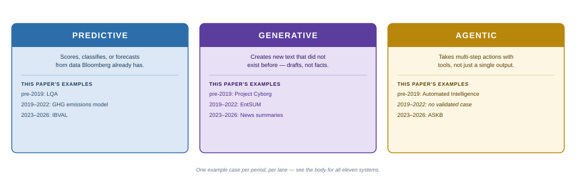
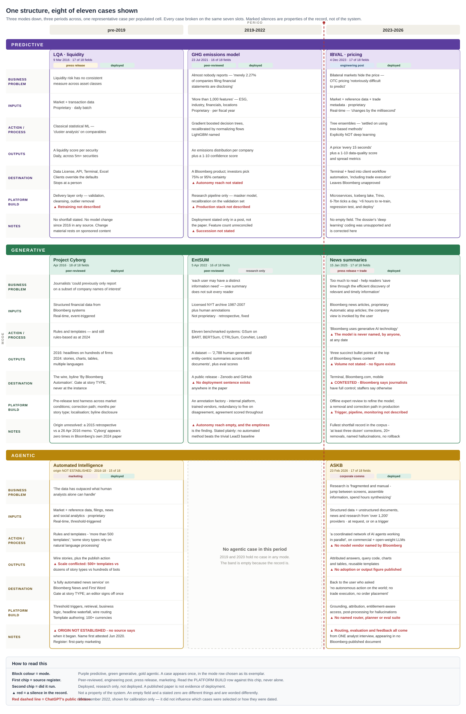
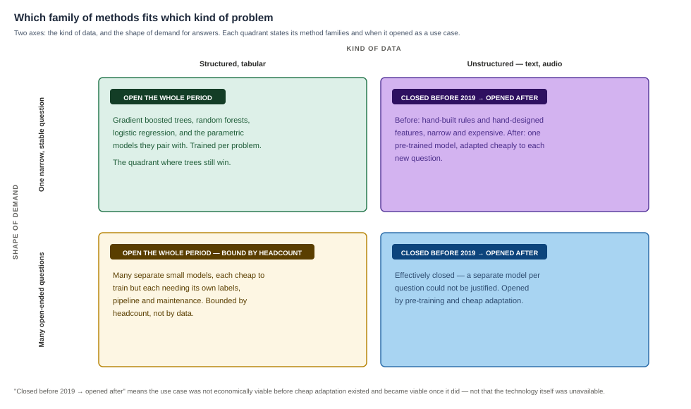
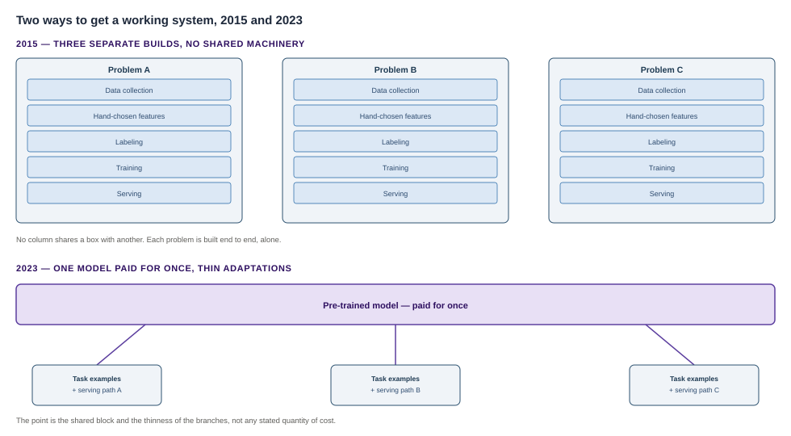
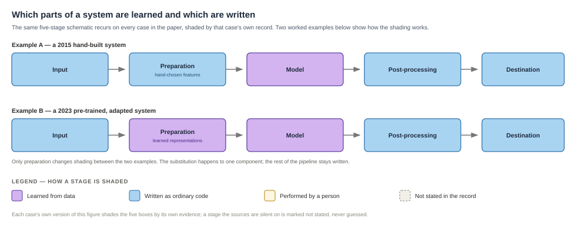
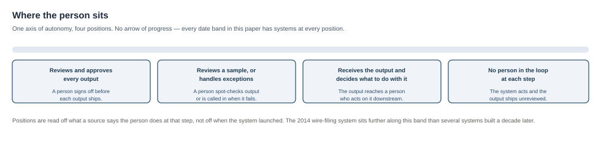

AI is hot but it isn't new
We hear about Large Language Models and chat tools and "AI" a lot these days. If you were in the technology field during the 2010s you likely knew AI was already proving valuable in industries like finance and healthcare, that the work was done by data scientists, and that it involved models and training.
Businesses like Bloomberg were among the successes, and used AI extensively. This is how a news story hits the wire seconds after an earnings release, and how an analyst gets a usable summary of a call while it still matters. AI takes raw news and financial data and, step by step, works out how to produce something a person wants to read. And this work was being done with earlier forms of AI, long before the ChatGPT era.
This paper traces eleven of Bloomberg's publicly documented AI systems from the past ten years, to show how the technical tools have changed and how their use has changed with them.
How the paper is organized
The eleven systems are grouped by what they produce. Some produce a number, a score or a ranking (Predictive). Some produce content — prose, code, images (Generative). Some take actions in other systems without a person approving each step (Agentic). All three kinds appear across the whole period, which is why the paper is organized by kind rather than by era.

Each system is also placed in one of three date bands: before 2019, 2019 to 2022, and 2023 to 2026 just to provide another way to see the field of cases we're reviewing. They aren't obvious "periods" of AI.

How the field got here
Automated news writing already worked in 2014
Automated production of text is older than most accounts of it. In its simplest form this is a "mail merge" with a lot of rules around what to merge and when to send it. By 2014, Automated Insights' Wordsmith was producing publishable earnings copy from market data, and the Associated Press was filing it. AP's own account is precise about how far the automation ran: the stories were "generated and sent directly out on the AP wires without human intervention," while "story templates were built for the automated output by experienced AP editors" and "the journalists have to watch for any errors and correct them."
A number became prose and the prose reached the wire with nobody approving that particular story. People were thoroughly present in building and managing the system and absent from each individual item. The same split recurs in many systems in this paper.
The machinery underneath was that fancy mail merge — all of those templates and rules. Wordsmith filled slots according to conditions someone had written. It did not learn to write. Calling it generative is accurate about the output and misleading about the method. What it lacked was generality: it wrote earnings stories because someone had written the rules for earnings stories, and pointing it at a new subject meant doing that work again.
What building a model took in 2015
In 2015, building one typically meant a specialized team writing code against raw data and running batch jobs on dedicated machines, with no product interface in the process. Someone decided which measurements the system would look at. Someone else assembled a set of examples where the answer was already known, so the system had something to learn from. The result solved one problem and could not be pointed at another. Two systems built a year apart inside the same company would share a vocabulary and might even use the same kind of model, but the training would have to be done again from the start, and so would everything built around it. By the end of the period this paper covers, the equivalent task could mean opening a chat window or calling an API into a general-purpose model that nobody at the company had built.
The machines started picking what to look at
Someone used to decide what a system would look at. From 2009 onward, first in speech recognition, then in images, then in language, systems began working that out for themselves from the raw data, and they started beating the systems whose measurements people had chosen. The hand-picked stage was removed rather than improved. Google Translate is the clearest public case, and it is more specific than the usual telling: what it replaced in 2016 was not a set of hand-written translation rules but an earlier statistical system that had itself been learned from data, running since 2006.
The architecture that made this work well on written language at scale was published by researchers at Google in 2017. It made it practical to train one very large model on an enormous quantity of ordinary text that nobody had to label, then point that same model at particular jobs — sometimes with a modest set of examples, sometimes with nothing but an instruction. Products followed: search ranking from 2019, a model that could be redirected by a handful of examples typed into the prompt in 2020, GitHub Copilot in 2021, and ChatGPT at the end of 2022, which is where most people's version of this history begins.
Andrej Karpathy named the shift "Software 2.0" in 2017: components that had been written as code would increasingly be trained from examples instead, wherever a task was hard to describe in rules and easy to demonstrate.
Bloomberg's systems went part of the way down that path and stopped.
Where older methods kept working
On tables of numbers — instruments, customers, transactions — a family of methods that builds many small decision rules — the kind of logic a nested if/then statement or a SQL CASE statement expresses — and adds their answers together remained the ordinary industrial choice throughout the whole period. The benchmark evidence points the same way: a 2022 study found these methods still ahead of neural approaches — the large-model family described above — on medium-sized tabular problems of roughly ten thousand examples. The study's own larger comparison, fifty thousand examples rather than ten, suggests only that more data narrows the gap, and its authors leave that trend to future work. Whether neural approaches ever close it on tabular problems is among the paper's open questions rather than its findings.
In December 2023, a Bloomberg team building intraday bond pricing tried a range of modern approaches and chose the older family anyway. Camilo Ortiz, manager of the AI Finance Engineering division, gave the reason: "While several of the modern machine learning architectures were competitive in our research process, we ultimately settled on using tree-based methods as these methods could scale better when compared to the alternatives …"
The argument did not end. What stayed open was not whether one family is better outright, but which problems call for which family.
The experts whose questions the paper carries
Four experts supply the questions this paper puts to the Bloomberg record. None of them writes about Bloomberg. Each was publishing on one part of the decade above while it ran, and each question rests on a piece of the vocabulary in How these systems work, named in the bio that carries it.
[add a sentence to each section that has their impressive credentials]
Ehud Reiter
Frank Harrell
D. Sculley
Gina Chua
AI Fundamentals
Models and training
What a model is, and what training means
Some parts of these systems are rule-based, written by people. Some were trained from examples. The trained parts are the models, and they are usually the smaller part.
Models and training A model is not a program in the ordinary sense. Nobody writes its logic. A model is a large collection of numbers, and those numbers are arrived at by showing the system examples where the answer is already known, then adjusting the numbers until it reproduces those answers. That adjusting is called training. Statisticians have long called the same operation fitting, and it is the same thing. It is closer to learning a language by immersion than from a rulebook. Nobody hands the model a grammar. It picks up the pattern underneath many examples instead of a stated rule. Statisticians and then computer scientists spent more than a century on this same problem of fitting numbers to examples. No single person or moment accounts for it.
The purpose is not to reproduce the examples. It is to work on cases the system has never seen, which is called generalization. A model can reproduce every example it was shown and be useless on anything new, having memorized the accidents of those particular examples rather than the pattern behind them. That failure is common enough to have a name — overfitting — and much of the apparatus of training exists to detect it and hold it off.
The two kinds of model in this paper are both trained, and the word covers two very different operations.
A narrow model of the kind built in 2016 begins with a person deciding what the system will look at. For a bond, that might be its currency, its duration, its time to maturity, the amount outstanding — a handful of measurements chosen because somebody with domain knowledge believed they carried the signal. Then a set of examples with known answers is assembled, often by hand. Training fits the numbers to those examples, and it runs in minutes or hours on ordinary hardware. The result answers one question. Bloomberg's bond-liquidity system - which was an AI solution - could not be asked about anything but bonds. And then just a few things about them.
A large language model begins from the opposite end. It is trained on an enormous quantity of ordinary text that nobody labeled, using a task that supplies its own answers: hide a word, predict it, check, adjust, repeat, billions of times. Nobody assembles examples, because the text is the examples. Training runs for weeks across hundreds of specialized machines. The result is not trained to be perfect at a specific job, but it is useful for many. Pointing it at a new job takes a modest set of examples. Sometimes only an instruction.
Both are models and both were trained. What separates them is what they were shown and how many different questions one of them can answer afterwards.
Three states a model can be in
The same architecture can occupy any of the three. What separates them is how much data the model was trained on, and whether that training was aimed at a single job, aimed at many, or has not happened yet.
| State | What it is | What it is called |
|---|---|---|
| Untrained | The architecture — the arrangement of parameters and the procedure for combining them — with its numbers set at random. It runs, and it produces nothing useful. | There is no settled single noun. Practitioners say untrained or randomly initialized model, and architecture for the design on its own. |
| Trained for one job | Parameters fit to examples of a single task, using measurements chosen for that task. It answers one question, and what it learned transfers to other tasks only narrowly. | Task-specific model, or fine-tuned model where it was adapted from a larger model rather than built from scratch. |
| Trained broadly, then adapted | Parameters fit to an enormous quantity of general data with no particular task in view, then adjusted cheaply for particular jobs. | Foundation model for the broad one, base model for the version before any adaptation. Frontier model is used for the largest and most capable models available at a given moment, which makes it a moving label rather than a technical category, and usage varies. |
Training: features, labels, and fitting
Features are the measurements the model is given about each item it scores. For a bond, its currency, its duration, its time to maturity, the amount outstanding. Labels are the known answers attached to examples the model is shown: this bond traded at this cost, this email was spam. Training means adjusting the parameters until the model's outputs come as close as possible to the labels on the examples it was shown. Statistics calls the same operation fitting, and it is the same operation.
Choosing the features and training the model are separate jobs, usually done by different people. A person with knowledge of the subject decides which measurements matter and how each one is computed. Training then fits numbers to that fixed set of measurements. It cannot recover a signal nobody thought to measure. The standard detection is to hold back part of the examples, train on the rest, and measure the model only on the part it never saw.
Learning from data
Where labels come from decides what is possible
Ground truth is the answer taken as correct — the source of the labels used in training, and the standard a system's output is scored against. It arrives in four ways, and which one applies decides what can be built and what can be measured.
| Source of labels | How it behaves |
|---|---|
| The world supplies it | The bond traded, the customer clicked, the machine failed. The answer arrives in seconds or days, costs nothing, and can be fed straight back into training. |
| The data supplies it | The label is taken out of the data itself: hide a word in a sentence and the hidden word is the answer. This is called self-supervised training, and it is what makes training on enormous unlabeled bodies of text possible. |
| People manufacture it | People read examples one at a time and mark the answer. Slow, expensive, and it carries the readers' disagreements into the model. |
| There is none | A summary is not right or wrong the way a price is. A bar can be asserted but never measured. |
Hand-built features and learned representations
A classifier is a model whose output is one of a fixed set of categories rather than a quantity — spam or not spam, one of six kinds of defect. Most classifiers produce a probability for each category, and a separate step turns that into a single answer.
Before deep networks displaced them, a team classifying photographs wrote code to detect edges, corners and textures, then fed those measurements to a classifier. The detectors were designed by people who had thought hard about images. A deep network is a model built from many successive layers of parameters, each layer taking the previous layer's output as its input. Given raw pixels, it works out its own intermediate descriptions of the image during training, with early layers settling on something like edges and later layers on something like shapes, none of it specified in advance. Those intermediate descriptions are learned representations. The same substitution happened to language. Word meanings that had been encoded by hand in dictionaries and rules were replaced by positions in a learned numerical space, derived from how words were used across a large body of text.
Architectures
Decision trees, ensembles and gradient boosted trees
A decision tree is a branching sequence of yes-or-no questions about the input that ends in an answer. Is the coupon above four percent? Is the maturity beyond ten years? Each answer sends the item down one branch, and a branch ends in a value. One tree is crude.
An ensemble combines many models into a single answer. Gradient boosted trees are the ensemble in ordinary industrial use: hundreds or thousands of small trees are built in sequence, each one fit to the errors made by the trees before it, and their answers are added together. A random forest is the other common tree ensemble, and it builds its trees independently on different samples of the data rather than in a correcting sequence. Logistic regression, the simplest member of the same toolkit, fits one weight per feature and converts the weighted sum into a probability.
On tables of numbers, gradient boosted trees work well. They train in minutes on ordinary hardware, tolerate missing values and features on wildly different scales, retrain cheaply when new data arrives, and can be inspected for which inputs drove a result. A team choosing them over a deep network is choosing operational properties.

Diagram: which family of methods fits which kind of problem, by the kind of data and the shape of the demand for answers.
Transformers, pre-training and adaptation
A transformer is an architecture for models that read sequences, most often text. It takes in a whole passage at once rather than one word at a time, and for each word it weighs how much every other word should influence that word's interpretation. Reading the passage in parallel is what made it practical to train very large models on very large amounts of text.
Pre-training means running such a model over an enormous body of ordinary text with a self-supervised objective, so nobody has to label anything. The result has absorbed a great deal about how language behaves and is good at no particular task. Adaptation means adjusting that model to a particular job afterwards. It takes a modest set of examples — and for some jobs no training at all, only an instruction in the prompt — and it costs a small fraction of what the pre-training cost.

Diagram: three problems each built end to end in 2015, against one pre-trained model adapted three times in 2023.
Retrieval-augmented generation
Retrieval-augmented generation, or RAG, is an arrangement of components rather than a kind of model. When a question arrives, a retrieval step finds the passages most relevant to it from a body of documents, usually by comparing a numerical representation of the question against one held for each passage. Those passages are placed in front of the model along with the question, and the model writes its answer from them. The facts come from passages that can be inspected. The model supplies the language and is not relied on for the facts.
RAG changes where an answer's facts come from. It does not check them. A passage retrieved and copied correctly can still be wrong, and the retrieval step can return the wrong passages.
Beyond the model
Most of a working system is not the model
A trained model is one component among many, and it is usually the smallest. Something has to collect the input data and confirm it arrived. Something has to compute the features the same way when the system is running as when it was trained, or the model quietly sees different numbers from the ones it learned on. Serving is that running state, where the trained model is applied to new inputs it has never seen. Something else has to store versions, retrain on a schedule, notice when the world has moved and the model has not, route bad outputs to a person, and record what was corrected. None of that is machine learning. All of it has to exist before the model is of any use.
The paper's pair for describing the mix inside one system, trained component and rule-based component, is defined in Technical references and used throughout. The surrounding apparatus described above is sometimes called orchestration in the wider industry. This paper does not use the word that way. Here orchestration names the agent loop and nothing else, meaning the controller, the dispatch of tools, and the memory that carries results from one turn to the next.

Diagram: the five stages of one pipeline, shaded by whether each stage was trained from data, hand-coded as rules, or performed by a person.
Where a person sits is not a property of the technique
A rule-based system can file to a news wire with nobody approving the individual item. A large trained model can be held behind review of every output. Position and technique vary independently, and the paper's term for how far a system acts without a person reviewing each output is autonomy reach, defined in the Appendix, at the end of the paper.

Diagram: four positions a person can occupy relative to a system's output, from approving every item to none.